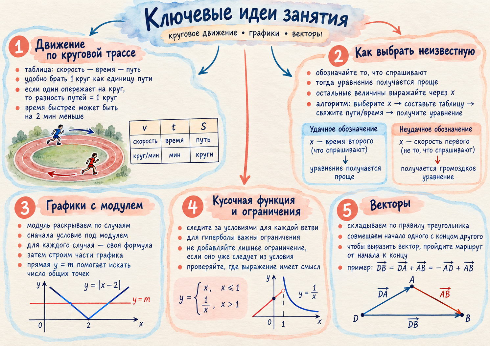

Общий принцип
Сначала цель, затем обозначения
В сложной задаче громоздкость часто появляется из-за неудачно выбранного языка. В текстовой задаче это неизвестная; в графике — корректная ветвь; в векторах — маршрут от начала искомого вектора к его концу.
Наглядная памятка занятияакварельный постер

Движение по круговой трассе
Искомое время удобно сделать неизвестной
Если требуется время прохождения одного круга, выбор x именно как этого времени сразу подчиняет таблицу цели задачи. Длину круга затем можно сократить.
| время круга | скорость | |
|---|---|---|
| первый лыжник | x − 2 мин | L/(x − 2) |
| второй лыжник | x мин | L/x |
Так как L ≠ 0, делим всё уравнение на L:
Короткий алгоритм
- Обозначьте то, что спрашивают. Здесь x — время второго лыжника на один круг.
- Заполните таблицу. Скорость одного круга равна L/t.
- Переведите фразу об опережении в разность путей. Один круг означает разность L.
- Уберите общую длину круга. После деления на L остаётся уравнение только относительно x.
График с модулем
Две формулы — один график
Для функции f(x)=|x|(x−1)−2x сначала раскрываем модуль по знаку x. После этого каждая параболическая часть строится только на своём промежутке.
(−1/2; 1/4), ветви вниз.
(3/2; −9/4), ветви вверх.
−1, 0 и 3 с учётом областей ветвей.
Кусочная функция
Ограничение ветви может уже содержать ОДЗ
Условие возле формулы — часть определения функции. Его нужно читать вместе с самой формулой, особенно для гиперболы и других выражений с ограниченной областью определения.
Знаменатель требует x ≠ 0. Однако отдельная запись здесь избыточна: из x < −4 уже автоматически следует x ≠ 0.
Векторный маршрут
Пройдите от начала искомого вектора к его концу
В параллелограмме путь из D в B можно пройти через A. Это превращает рисунок в последовательность двух знакомых векторов.
При смене направления вектора меняется знак: →DA = −→AD. Поэтому итоговая запись:
Путь А · 10 задач
Закрепление по четырём линиям
Условия перенесены из чек-листа занятия. Ответы можно открыть после самостоятельной попытки.
- Два бегуна стартовали одновременно из одной точки круговой трассы в одном направлении. Скорость быстрого на 2 км/ч больше скорости медленного. Быстрый завершил первый круг через 18 минут. Через 20 минут после старта медленному оставалось 500 м до конца первого круга. Найдите скорость медленного бегуна.
Ответ: 3 км/ч.
- Первый лыжник проходит круг на 3 минуты быстрее второго. За 60 минут первый опережает второго ровно на один круг. За сколько минут второй лыжник проходит один круг?
Ответ: 15 минут.
- Первый спортсмен проходит круг на 4 минуты быстрее второго. За 48 минут первый опережает второго ровно на два круга. За сколько минут второй спортсмен проходит один круг?
Ответ: 12 минут.
- Второй бегун проходит круг за x минут, первый — на 2 минуты быстрее. За 45 минут первый опережает второго на один круг. Запишите уравнение относительно x и ограничение.
Ответ: 45/(x−2) − 45/x = 1, x > 2.
- Представьте g(x)=|x|(x+2)−x в виде кусочной функции без модуля.
Ответ: −x²−3x при x<0; x²+x при x≥0.
- Для f(x)=|x|(x−1)−2x найдите вершины обеих частей и нули функции.
Ответ: (−1/2;1/4), x=−1; (3/2;−9/4), x=0,3.
- Для той же функции найдите все m, при которых y=m имеет с графиком ровно две общие точки.
Ответ: m=1/4 или m=−9/4.
- Для h(x)=4/x+2 при x<−4 нужно ли отдельно дописывать x≠0?
Ответ: нет; x<−4 уже исключает 0.
- В параллелограмме ABCD выразите →DB через →AB и →AD.
Ответ: →DB = →AB − →AD.
- Пусть →AB=a, →AD=b. Выразите →CA через a и b.
Ответ: →CA = −a − b.
Самопроверка
Отмечено: 0 из 5